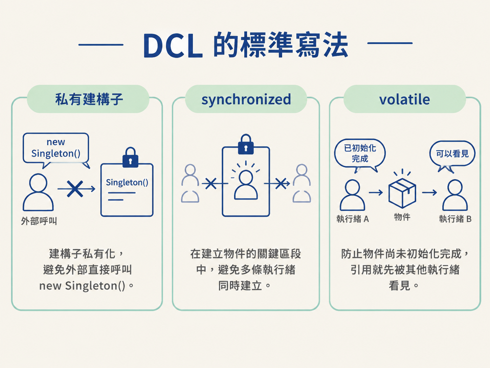
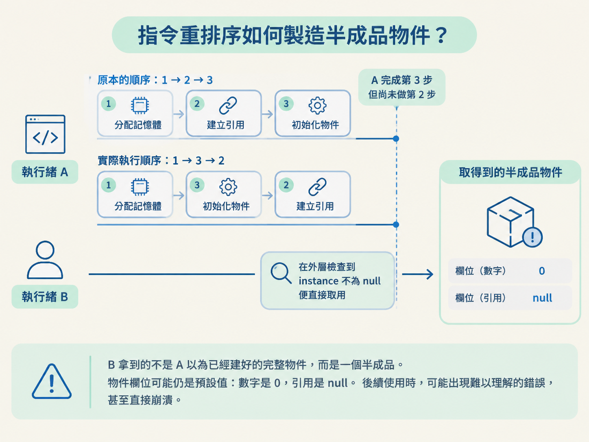
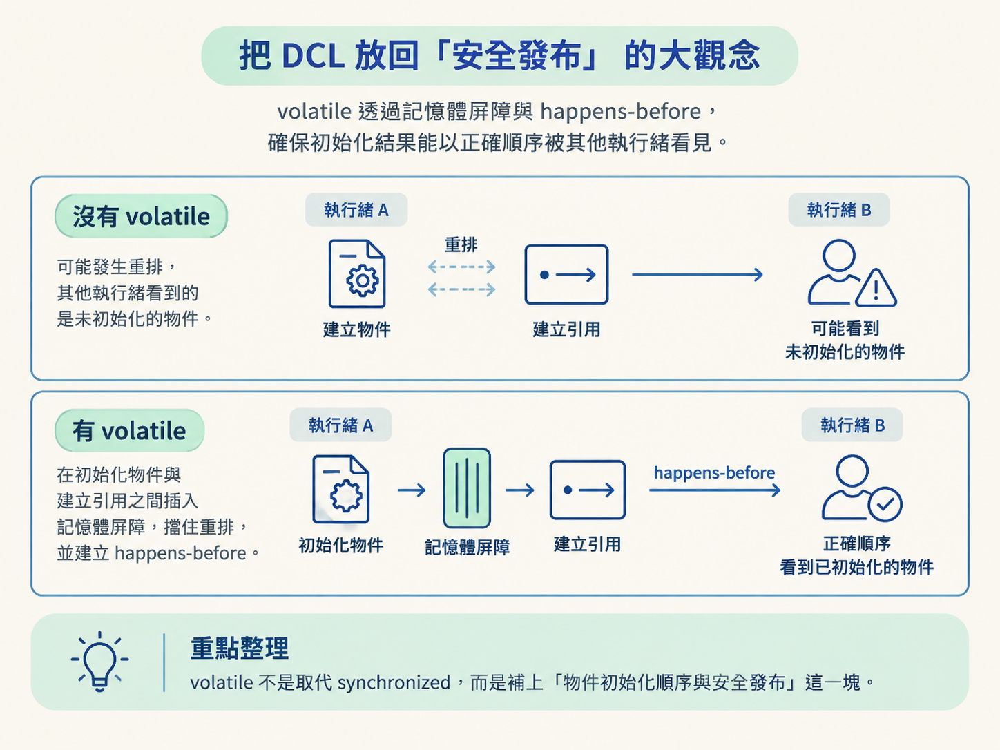

volatile？小心拿到半初始化物件面試官請你手寫一個執行緒安全、而且採用懶加載的單例。你寫出兩層檢查，再加上 synchronized，看起來幾乎無懈可擊。沒想到對方接著問：「這裡的 volatile 為什麼不能省？」
很多人知道 DCL（雙重檢查鎖，Double-Checked Locking）要這樣寫，卻說不清楚少了 volatile 會發生什麼。問題不在單例的表面邏輯，而在 JVM 可能重新排列 new 物件時的指令順序，讓另一條執行緒看見一個「引用已經出現、內容卻還沒準備好」的半成品。
這一節會從 new 的底層步驟開始拆解，說明為什麼 DCL 需要 volatile，以及它和物件安全發布之間的關係。
先看完整版本。這段程式裡的三個關鍵設計，各自處理不同問題：
public class Singleton {
// 1. volatile 禁止指令重排
private static volatile Singleton instance;
// 2. 建構子私有化，防止外部 new
private Singleton() {
}
// 3. 對外提供靜態存取點
public static Singleton getInstance() {
// 第一次檢查：已建立就直接返回，不用搶鎖
if (instance == null) {
synchronized (Singleton.class) {
// 第二次檢查：防止多個執行緒重複建立
if (instance == null) {
instance = new Singleton();
}
}
}
return instance;
}
}建構子的私有化，避免外部直接呼叫 new Singleton()。synchronized 負責在建立物件的關鍵區段中避免多條執行緒同時建立。至於 volatile，則是為了防止物件尚未初始化完成，引用就先被其他執行緒看見。

外層檢查主要是為了效能。單例建立完成後，大多數呼叫都只是讀取已存在的 instance，不需要每次都進入同步區，也就不用反覆付出搶鎖和排隊的成本。
內層檢查則是為了避免重複建立。假設執行緒 A 和執行緒 B 同時通過外層的 instance == null，A 先搶到鎖並完成建立。A 釋放鎖後，B 才取得鎖。
如果 B 進入同步區後不再檢查一次，就會把物件重新建立一遍。這時候雖然有鎖，卻仍然可能得到兩個物件，單例也就失去意義。
| 檢查位置 | 主要目的 | 少了會怎樣 |
|---|---|---|
| 外層檢查 | 建立完成後避免每次都搶鎖 | 每次呼叫都要進入同步區，增加鎖的成本 |
| 內層檢查 | 進入鎖後再次確認是否已建立 | 不同執行緒可能重複建立物件 |
兩次檢查解決的是效能與重複建立問題。但即使有這兩層檢查，還有一個更隱蔽的風險：其他執行緒可能看見一個還沒初始化完成的物件。這正是 volatile 要處理的事情。
new 看起來是一行，JVM 眼中卻是三步程式碼中的 instance = new Singleton(); 看起來像一個不可分割的動作：建立物件，然後把它交給 instance。但在 JVM 層面，它可以拆成三個步驟：
instance 這個引用指向那塊記憶體。此時 instance 已經不是 null，但物件可能還沒完成初始化。這三步在單執行緒的直覺裡像是一條完整動作，但它們並不是一個絕對不可拆開的整體。為了提升執行效率，只要不改變單執行緒最後看到的結果，編譯器和 CPU 就可能重新安排指令順序。
我們期待的順序是：
1 分配記憶體 → 2 初始化物件 → 3 建立引用
但在允許重新排序的情況下，也可能變成：
1 分配記憶體 → 3 建立引用 → 2 初始化物件
為什麼這在單執行緒下看起來沒有問題？因為同一條執行緒會接著執行第 2 步，最後仍然能拿到初始化完成的物件。單執行緒只看最後結果，很難察覺中間曾經出現過短暫的半成品。
多執行緒就不同了。假設執行緒 A 先完成第 1 步和第 3 步，卻還沒完成第 2 步。此時記憶體已經分配好，instance 也已經不等於 null，但建構子還沒有把欄位完整設定好。
就在這個空檔，執行緒 B 進入 getInstance()。它在外層第一次檢查時看到 instance 不為 null，於是直接回傳這個物件，完全不會進入同步區等待。
結果是，B 拿到的不是 A 以為已經建好的完整物件，而是一個半成品。物件裡的欄位可能仍然是預設值：數字是 0，引用是 null。後續使用時，程式可能出現難以理解的錯誤，甚至直接崩潰。

這類問題通常很難重現。一般測試可能完全看不出來，只有在多執行緒壓力夠高、時機剛好撞上的情況下，才偶爾出現。因此它特別難查，也特別適合拿來考你是否真的理解 JMM 的有序性。
volatile 解決的是「先完成，再發布」把 instance 宣告成 volatile，JMM 會在相關讀寫操作前後建立記憶體屏障，禁止物件初始化與引用發布之間出現危險的重排序。
換句話說，原本可能發生的：
1 分配記憶體 → 3 建立引用 → 2 初始化物件
會被限制成必須先完成初始化，再讓引用被其他執行緒看見：
1 分配記憶體 → 2 初始化物件 → 3 建立引用
因此，執行緒 B 看到的狀態只會有兩種：
instance 還是 null，B 就進入同步區等待並再次檢查。instance 不為 null，而且物件已經完整初始化，可以直接使用。最危險的中間狀態——「引用已經不是 null，但物件還沒初始化完」——就不會被其他執行緒直接看到。
這個案例其實不只是在背 DCL 的固定寫法，它也是「物件安全發布」的具體例子。
當一條執行緒建立物件，接著把物件交給其他執行緒使用時，重點不只是「引用有沒有傳過去」，還要保證對方看到的是完整建構好的版本，而不是正在建構中的狀態。
volatile 在這裡扮演的角色，就是透過記憶體屏障與 happens-before 承諾，確保初始化的結果能以正確順序被其他執行緒看見。它不是用來取代 synchronized，而是補上「物件初始化順序與安全發布」這一塊。

所以，DCL 會成為「有序性」的經典題目，是因為它把幾個容易分開背誦的概念接在一起：new 的多個步驟、指令重排序、記憶體屏障，以及多執行緒如何看見彼此的結果。
DCL 的兩次檢查分工不同：外層為效能，讓建立後的呼叫不用再搶鎖；內層為安全，防止兩條執行緒重複建立。而 new 在 JVM 層面是「分配記憶體、初始化物件、建立引用」三步，且允許被重排成 1→3→2。少了 volatile，就可能發生「引用已不為 null、但物件尚未初始化」的半成品狀態，讓另一條執行緒在外層檢查時直接取用而崩潰。volatile 用記憶體屏障禁止這個重排，保證先初始化、後發布，也就是安全發布。
到這裡，鎖與記憶體模型的這條路線先告一段落。它們都是偏向「先假設可能發生衝突，再用互斥或記憶體屏障把問題擋住」的做法。
下一節會換一條思路：CAS 假設衝突不常發生，嘗試靠一條 CPU 原子指令完成更新。不過，這條路也有自己的代價，例如 ABA 問題，以及 AtomicInteger 在高競爭下可能遇到的效能瓶頸。